오전
사실 이 날은 별로 한게 없다. 일어나서 씻고 구내식당에서 아침을 먹고 건물 앞에서 다른 나라 팀 아이들과 친목질을 하고, 다시 점심을 먹고 개막식을 했었다.
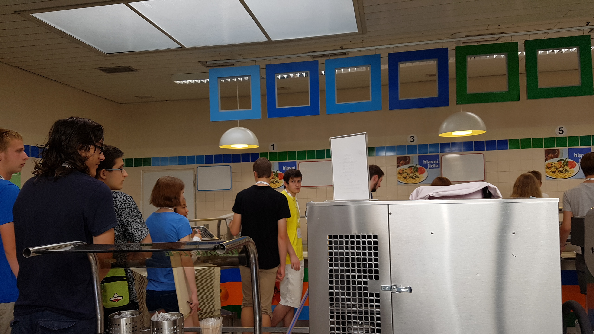 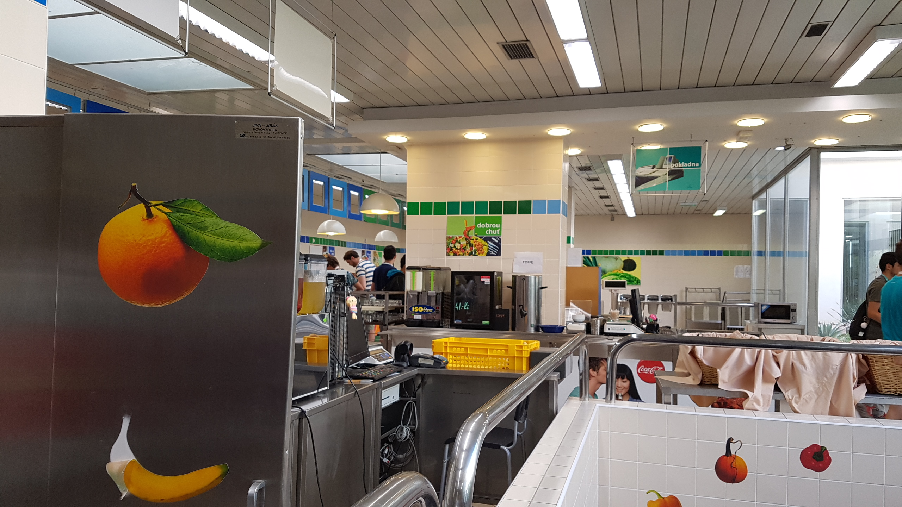배식대 전경이다. 아침밥으로는 학교 구내식당에서 소시지와 계란, 빵 몇 개와 요거트를 먹었다. 생각보다 맛이 괜찮아서 다행이었다.
바로 옆 테이블에서 뭔가 귀에 익은 언어가 들려 고개를 돌려 그들의 명찰을 보니 ‘Denmark’라고 적혀있더라.
관심있는 언어가 귀에 들리니까 순간 설렜다. “Er du fra danmark?”나 “Jeg kan tale dansk.”라고 말을 할까 고민했다. 한때 덴마크어에 빠졌을 때 덴마크어의 발음을 어느 정도 연습했던 적이 있었기에 약간의 자신감은 있었지만 귀찮기도 해서 그냥 관뒀다. 그런데 덴마크어를 실제로 들어본 것은 이번이 처음이었다. 굉장히 신기했다. 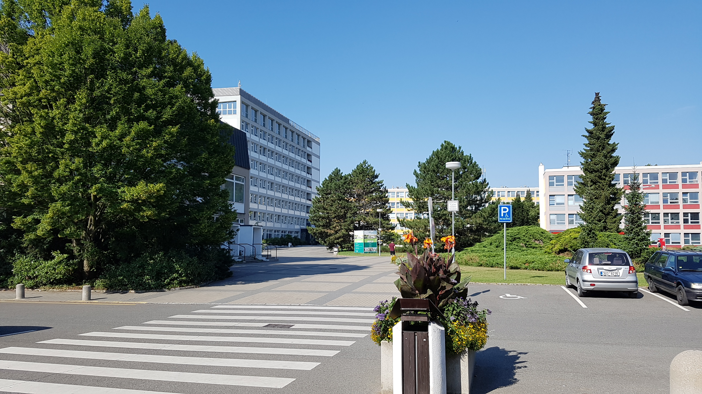 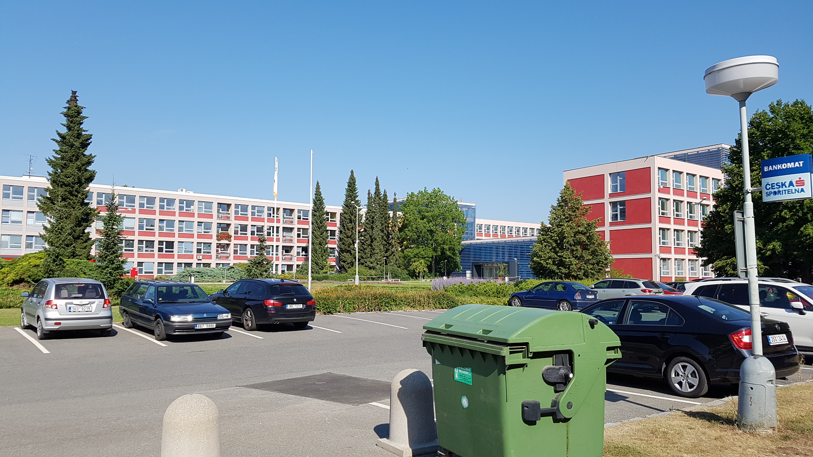밥을 먹고 나와서 빌딩 앞에서 한국 팀 친구들끼리 서 있었는데, 옆에서 유쾌하게 대화하고 있던 러시아 국가대표 팀 남자 한 명과 여자 한 명이 와서 말을 걸었다. 그들도 약간 어색했는지 머뭇거리면서 우리가 있는 쪽으로 왔는데, 어색한 분위기를 깨고자 그냥 알고 있는 아무 러시아어를 외쳤다. 아마 “Привет!”라고 말했던 것 같다. 러시아 친구들도 반가워하면서 한국의 인사말을 물어봤고, ‘안녕’이라고 가르쳐주자 서서히 다시 대화가 끊기기 시작했다. 그래서 필자는 몇 년 전 러시아어 독학을 시도했던 당시의 기억을 떠올리며, 러시사어의 필자체를 연습하다가 너무 어려워서 러시아어 독학을 포기한 적이 있다고 이야기를 꺼냈고, 그 이후로도 서로에 대한 릴레이 질문이 오가면서 서서 한 20분 정도 수다를 떤 것 같다. 카페테리아 건물 입구에서 동양인과 유럽인 5~6명이서 큰 소리로 오랫동안 떠드는 것이 신기했는지 주변에 있던 다른 사람들도 막 몰려와서 대화에 관심을 보였다.
어제 공항 앞에서 서로의 이름을 교환하고 짧게나마 이야기를 했던 우크라이나 팀 여자 참가자 한 명과 불가리아 팀 남자 참가자가 합류하면서 범슬라브 언어들로 대화 주제가 넓어지기 시작했다. 얼마 안 있어 밥을 먹고 막 건물에서 나온 폴란드 팀과도 폴란드어와 체코어의 유사성에 대해서 이야기를 했다. 특히 폴란드 팀과 한 대화가 기억에 남는데, 그 중 하나를 소개하자면 필자는 이전까지 체코어와 슬로바키아어만 서로 상호 의사 소통이 가능한 언어인 줄 알고 있었는데 폴란드인들도 체코어를 어느 정도 알아들을 수 있다고 한다. 폴란드 팀 중 한 명에게서 신기한 사실을 들었는데, 체코어를 알아듣긴 하는데 좀 웃기게 들린다고 한다. 실제로 인터넷에 찾아보니 폴란드인들에게 체코어는 '혀 짧은 어린아이'가 말을 하는 것처럼 들린다고 한다. 솔직히 이야기해서 필자가 폴란드어 하면 생각나는 것은 'w, s, z'로만 이루어진 언어라는 것 정도 뿐이었는데, 신기했다.
올해 초 언어학 올림피아드 선발전에 지원을 할 때, 필자는 자기소개서에 이런 말을 쓴 적이 있다:
"국제 대회에 참가할 자격이 주어진다면 언어학에 조예가 깊은 전 세계의 수많은 청년들에게 많은 것을 배우고, 언어학에 대한 제 꿈을 키워나갈 수 있게 되리라 기대하고 있습니다."
옛날부터 필자는 외국인들과 소통하고 친분을 쌓는 것에 대한 로망 같은 것이 있었다. 언어학 올림피아드에 참가를 결정한 이유도, 외국에 가서 세계 각지에서 모여든 외국인들과 언어학에 대해서 깊은 이야기를 해보고 싶다는 마음에서 비롯된 것이었다. 폴란드 국가대표팀의 한 남자와 아까 특히 오랫동안 이야기를 했었는데, 자신의 언어에 대해서 설명해줄 때 필자는 순간 행복감을 느꼈다. 관심사가 비슷한 사람들끼리 모여서 그에 대한 깊은 이야기를 할 수 있다는 것이 얼마나 행복한 것인지 다시금 깨달을 수 있었던 것 같다.
여하튼, 아까 이야기로 다시 돌아가면…
폴란드 팀과 한창 이야기를 하고 있었는데, 저 멀리 동양인 무리가 서있는 것이 눈에 들어왔다. 여기서 잠깐 덧붙이자면, 필자가
사실 체코에 온 이유는 사실 하나 더 있다. 바로 일본어 대화 상대를 만드는 것. 4년 간 일본어를 독학했지만 정작 그 기술을 쓸 대화 상대가 없어 항상 답답했다. 물론 심심할 때마다 인터넷에 있는 일본 우익들과 댓글로 한바탕 싸우긴 하지만 이성적이고 실질적인 대화 상대가 필요했다. 마침 뭔가 동양인처럼 생긴 사람들이 저 멀리 몰려있었던 것을 본 필자는 전화를 받는 척 하면서 열렬한 토론이 벌어지고 있던 범슬라브인들의 무리에서 슬쩍 나왔다.
아니나다를까, 일본 국대 팀이 맞았다. 그래서 필자는 처음에 영어로 말을 걸었는데, 알고 보니 바로 옆에 서 있던 사람은 중국 국가대표였다. 아쉽게도 그 중국인은 일본어를 몰랐고, 결국 영어로 약 20분 동안 한중일 동북아 3국의 우애를 다지고 서로를 응원해주고 돌아왔다.
여러 국적의 외국인들을 만나고 수다를 떨고 느낀 점은…
슬라브계 언어를 단 한 번도 제대로 공부해본 적이 없다는 것이 너무나도 큰 아쉬움으로 작용했다. 러시아어라도 조금 더 했다면 슬라브계 국가들의 사람들과 말도 더 잘 통했을 것이다. 무엇보다 다음부터는 조금 더 용감해질 필요가 있을 것 같다. 덴마크나 스웨덴, 프랑스(알아보니 프랑스 팀은 없다고 한다), 일본 팀이 보인다면 꼭 그들의 언어로 말을 걸 것이다!
점심은 조금 오바였다. 같은 식당에서 먹었는데, 정말 문화적 충격을 받았다. 긴 배식대에 딱 3명의 사람이 서 있고, 각각의 사람은 미리 준비해놓은 음식들을 모두 한 접시에 담아서 앞에 내놓는다. 배식대에는 그래서 총 3개의 요리가 각각 한 접시에 담겨져 올려져 있었는데, 하나는 감자튀김+처음 보는 소스+닭고기, 하나는 밥+방금 그 소스+닭고기, 그리고 또 하나는 생 통감자(땅에서 방금 파올린 감자를 깎고 잘라 그대로 내놓은 것이다-조미도 되어있지 않다)+왠지 인조고기처럼 보이는 이상한 음식이었다. 이 중에서 하나를 골라 가져가서 먹는 식이었는데, 정말 심각하게 고민해서 고른 음식이 이것이었다.
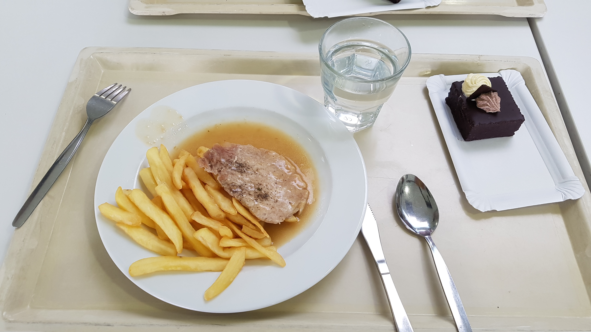그냥 정말 배가 고파서 먹었다. 계속 먹다 보니 못 먹을 음식은 아니었는데, 신기한 것은 주변에 앉은 서양인들은 정말 잘 먹고 있었다는 것이다. 역시 주식이 달라서 그런가...
필자는 그래도 내가 골라서 가져온 음식이니 다 먹어야지 하는 생각으로 접시를 비웠는데, 주위를 둘러보니 필자만 접시를 깨끗이 비우고 있었고 주변 친구들은 이미 수저를 놓고 먹지 않고 있었다. 주변 친구들은 필자의 접시를 가리키며 정말 신기하다고 했고, 이 상황은 이 날 이후로 일주일 간 매끼마다 연출되었다.
개막식
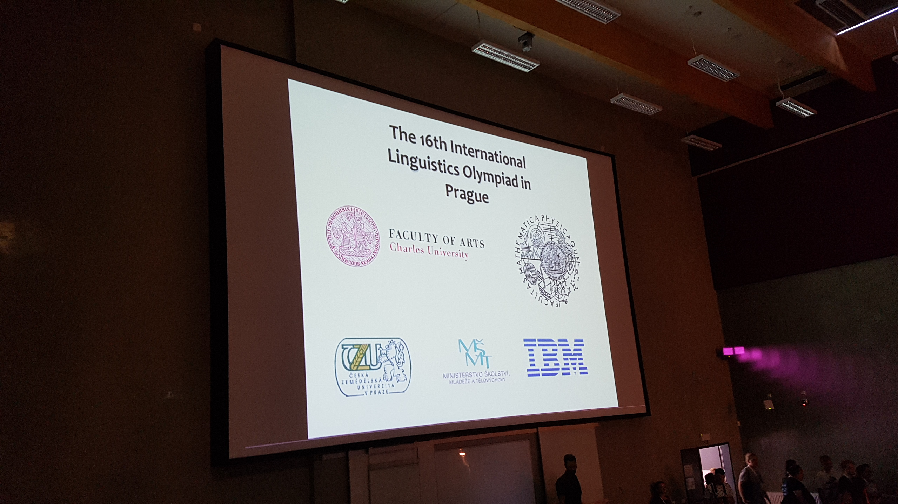 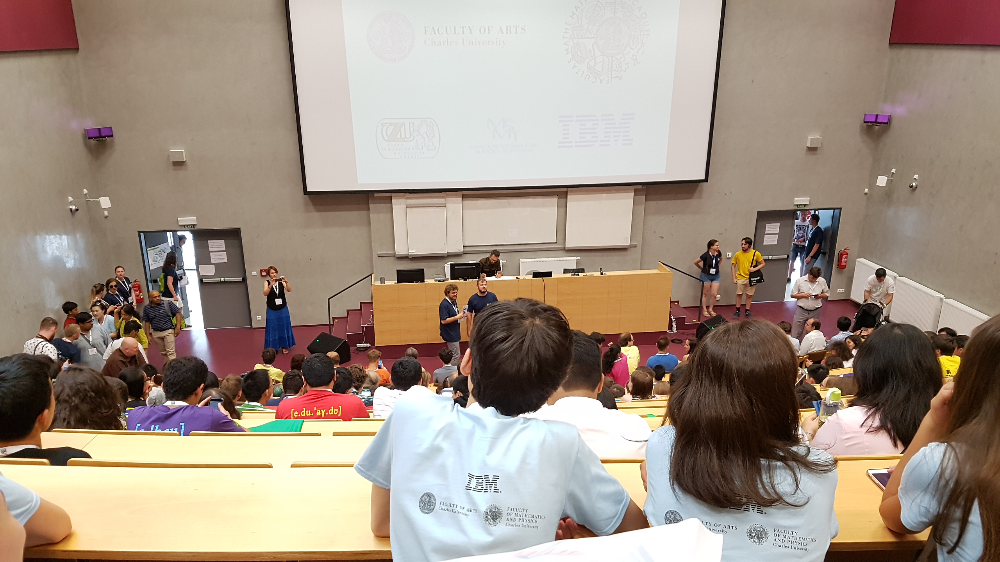드디어 대망의 개막식! 큰 강의실에 들어가는데, 전 세계에서 온 우리 나이 또래들이 각자 국기를 들고 자리를 잡고 있었다.
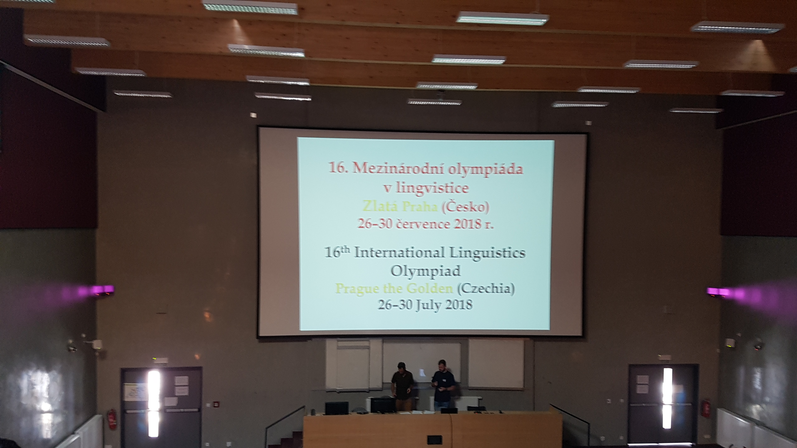저 배너를 잘 보면 'mezinárodní'라는 단어가 있는데 '국제'라는 뜻인 것 같다. 잠시만, 저 단어 속 'národ'라는 말, 우리 모두 어디서 많이 들어본 적이 있다. 그렇다, 바로 국사 시간에 '브나로드 운동'을 배우면서 들어본 적이 있다! 브나로드는 러시아어 'В народ (민중 속으로)'에서 왔는데, 그렇다면 'народ'는 '민중'이라는 뜻일 것이다. 그런데 체코어에서 '국제'라는 뜻을 가진 단어에 'národ'라는 단어가 있다라는 것은 조금 넓게 생각하면 'narod'라는 단어는 '국가, 민중, 민족'이라는 뜻을 가지고 있을 것이라 예측해볼 수 있다.
조사 결과 예상이 적중했다. 홧김에 직접 정리해봤다.
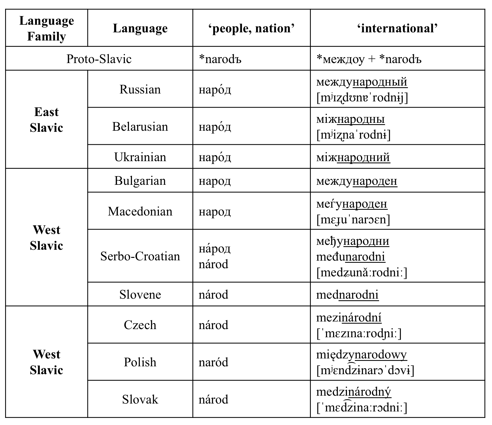너무 신기하다. 10세기 정도에 갈라지기 시작한 동/서/남슬라브어군들의 언어임에도 불구하고 이렇게나 어휘가 비슷하다. 이러니 자연스럽게 서로 알아들을 수 밖에 없는 것 같다.
(아, 저 표에 오류가 있는데 파일 저장을 안 해서 오류를 못 고쳤다!ㅜㅡㅜ 'international'의 Proto-Slavic 단어는 *meďu와 *narodъ가 합해진 형태를 띈다. 또한 맨 왼쪽 셋째 줄 칸에 들어가야 할 말은 'South Slavic'이다.) 전체적으로 보니 Proto-Slavic에서 구개음화된 'd'가 여러 언어로 분화되면서 retroflex fricative, palatal fricative, alveolar fricative 등으로 변화한 모습이 눈에 띈다.
본론으로 돌아와서...
국제언올의 출제위원 중 이반 데르잔스키라는 분이 계신데, 이 분은 언올계에서 전설로 거론되고 있는 사람이다. 매년 최고난이도 문제를 출제하고 계시고, 이 분의 문제는 언제나 극악의 난이도를 자랑했다. 그 전설적인 분이 나와서 잠시 대회의 기본적인 설명을 하셨다. 첫인상은 굉장히 까다롭고 무섭게 생기셨는데 말하시는 것은 굉장히 웃겼던 것 같다. 발표 중 이런 것도 우리에게 보여주셨다:
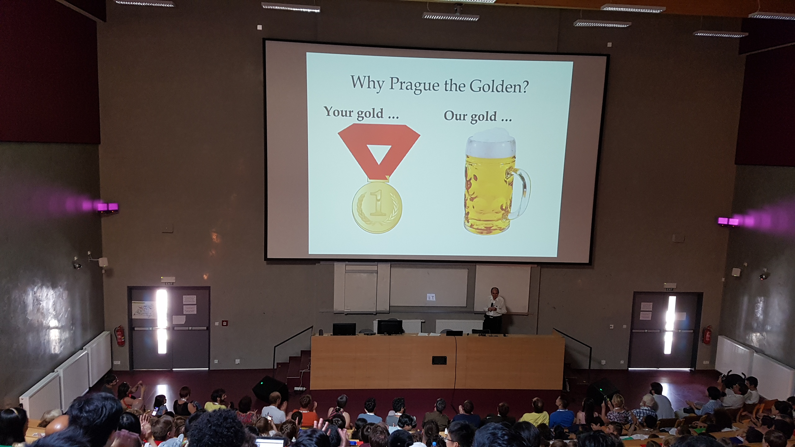체코는 역시 맥주의 나라구나라는 것을 다시금 느꼈다.
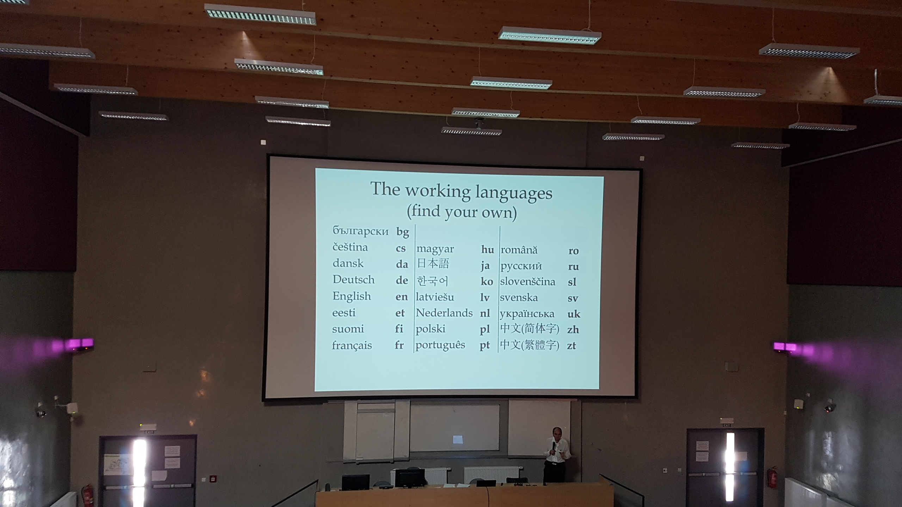오, 흥미로운게 나왔다.
국제언어학올림피아드에서는 매년 30~40개국에서 참가하고 있는 만큼 문제들도 모두 각 나라의 언어로 번역되어 배부된다. 정말 다양한 언어들이다. 에스토니아, 루마니아, 헝가리에서도 왔다니... 말로만 듣던 나라들의 사람들을 실제로 보니 너무나도 신기했다. 특히 에스토니아어와 루마니아어, 라트비아어, 핀란드어 등 인터넷에서만 보고 듣던 언어를 실제로 할 줄 하는 사람이 같은 공간에 있다는 것 자체가 느낌이 묘하면서도 기분이 좋았다. (일반인이 보면 무엇이 신기한지 모르겠지만) 다 한 번씩 들어보고 위키피디아에서 찾아본 언어들이라 그런지 생소한 언어들은 예상보다 많이 없었다. 물론 낯익은 언어들도 보여서 엄청 반가웠다. 댄스크(dansk, 덴마크어), 스벤스카(svenska, 스웨덴어), 프랑세(français, 프랑스어), 췌슈티나(Čeština, 체코어), 슬로벤슈치나(Slovenščina, 슬로바키아어), 니홍고(日本語, 일본어), 쫑원(中文, 중국어), 우크라인스카(Українська, 우크라이나어), 루스키(русский, 러시아어), 그리고 자랑스러운 한국어!
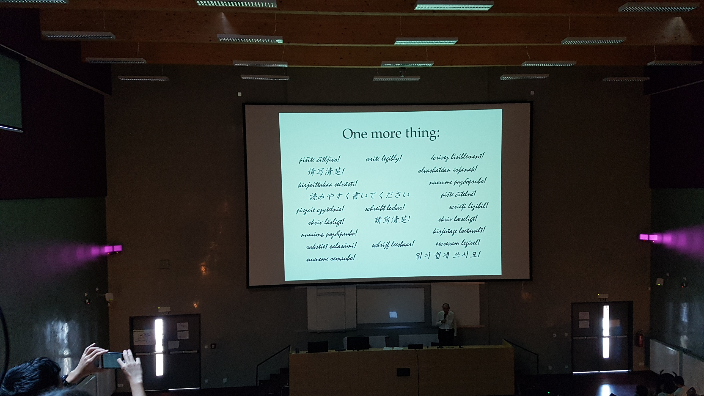또 하나의 흥미로운 슬라이드.
필자가 필기체를 잘 못 읽어서 겨우 읽어낸 것은 스웨덴어의 'Skriv läsligt!', 덴마크어의 'Skriv læseligt!', 프랑스어의 'Écrire lisiblement!' 정도이다. (아 물론 영어도 찾았다.) 그런데 핀란드어로 '쓰다'와 '읽기 쉽게'가 무엇인지 모름에도 불구하고 핀란드어 문장은 쉽게 찾아낼 수 있었다. 'Kirjoittakaa selvästi', 핀란드어는 하도 스펠링이 특이해서 금방 찾아낼 수 있었다. 그리고 역시 눈에 익은 일본어 '読みやすく書いてください。'와 중국어 '请写清楚', 그리고 한국어 '읽기 쉽게 쓰시오!'
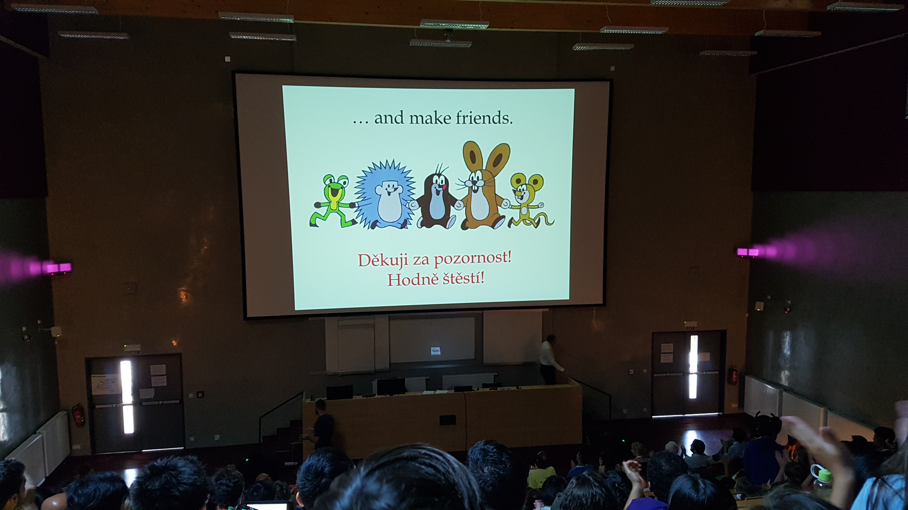이때까지만 해도 체코어에는 관심이 1도 없었지만, 지금 체코어 독학을 시작한 상태에서 보니 뭔가 반갑다.
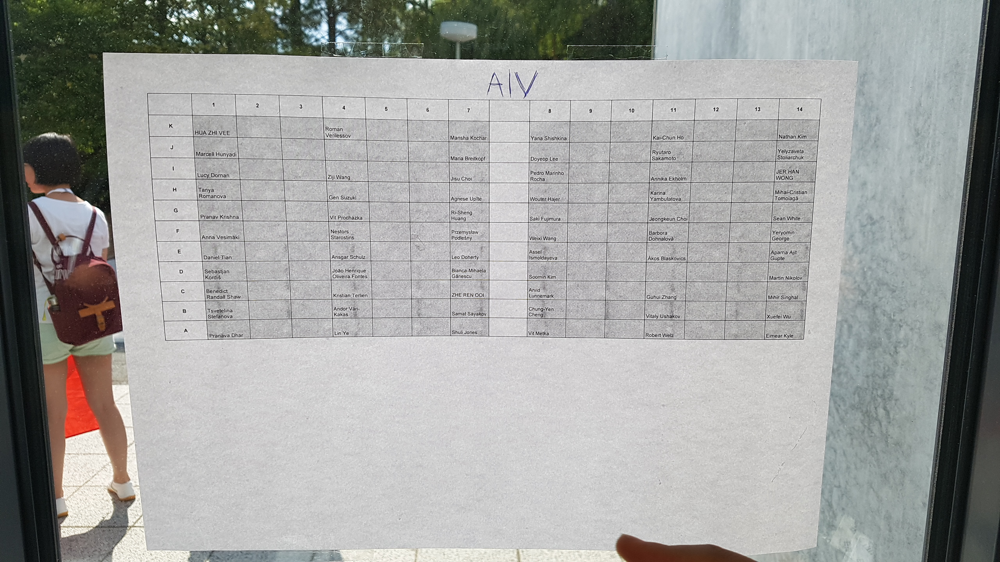개막식이 끝나고 벽에 붙어있던 개인전 좌석표. 이름들을 보고 정말 다양한 국가에서 모였음을 다시 한 번 실감하였다.
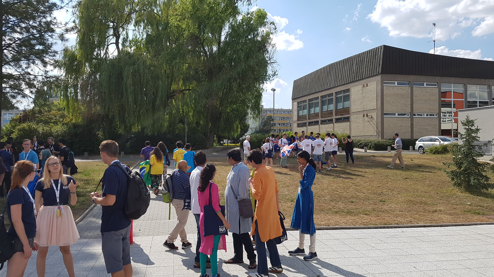밖에서는 다시 친목이 시작되고 있었다. 오전에 힘을 빼버려서 우리 팀은 사진만 찍고 기숙사로 돌아갔다.
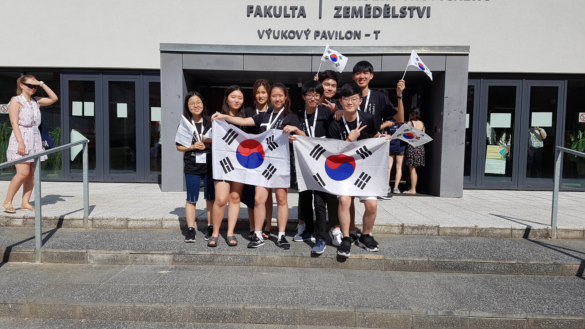기숙사에서 조금 휴식을 취하고 우리는 대학교 캠퍼스 앞에 위치해있던 푸드트럭에 가 햄버거를 사먹었다! 이때 너무 배가 고팠고 날씨도 더웠어서 햄버거를 받자마자 먹어치웠고, 사진을 찍어야한다는 것을 깨달았을 때에 이미 버거는 배 속에 들어간 후였다.
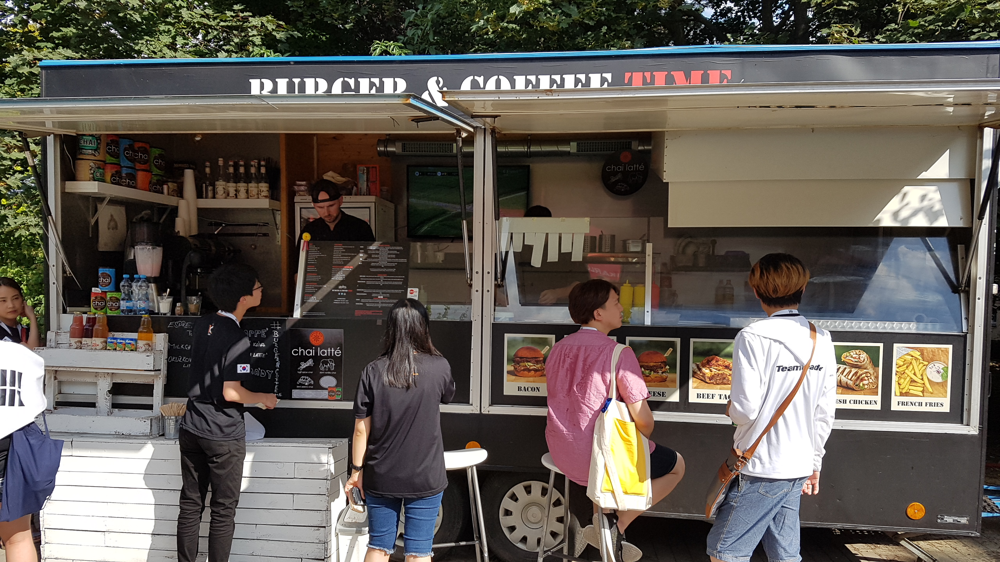푸드트럭 사진이다. 두 명의 젊은 남성이 열심히 햄버거와 밀크쉐이크를 만들고 계신다.
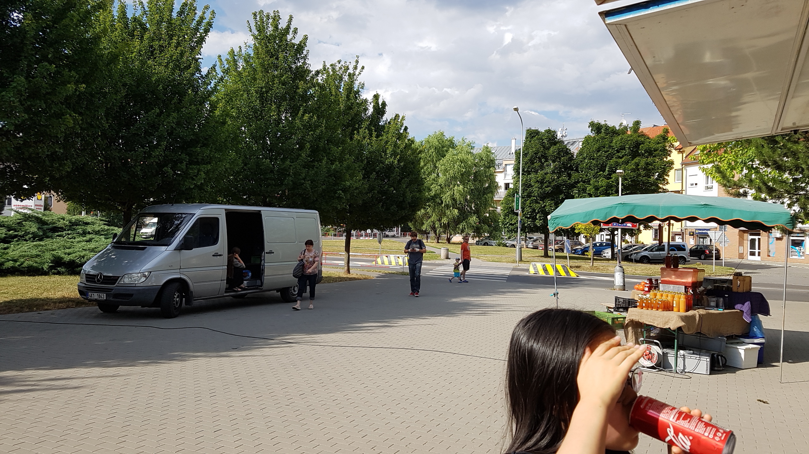캠퍼스 밖은 프라하 6구 북쪽에 위치한 Suchdol이라는 마을이었고, 전형적인 유럽 변두리 마을의 느낌이었다. 오후 3시 따스한 햇볕 아래 선글라스를 쓰고 아들과 손잡고 야외 유기농 주스 판매대를 찾아 장을 보고 간 젊은 남성, 거리를 천천히 산책하던 노부부. 처음 느껴보는 이국적인 여유였지만, 왠지 모르게 마음이 편해지는 느낌이었다.

이것은 애플 3D 지도에서 마을의 전경을 잡아본 사진이다. 행정구역 상 프라하 안에는 포함되지만, 실제 시가지까지 가기 위해서는 10분 정도 버스를 타고 가야 한다.

하단에 보이는 건물들은 대학교 캠퍼스이다.